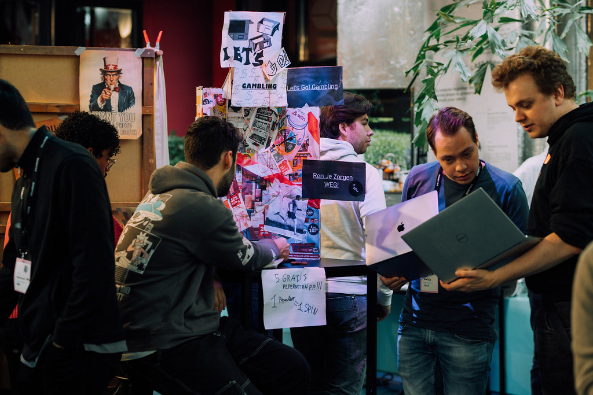

darktechmethode ~
Dark Tech Methode
Wat gebeurt er als we stoppen met oplossingen ontwerpen, en juist de systemen maken die we vrezen?
Een methode voor ethische reflectie in tech-onderwijs, via provocatieve prototypes. Door Marise van Noordenne & Jolijn Friederichs.
$ ls
methode/
De Dark Tech Methode is een speculative design-aanpak die ethische reflectie inbedt in het maken van technologie. In plaats van ethiek als aparte theorie te behandelen, ontwikkelen deelnemers provocatypes: provocatieve prototypes die de schaduwkant van opkomende technologie uitvergroten en bespreekbaar maken.
Door macht, manipulatie, surveillance, afhankelijkheid en andere maatschappelijke gevolgen tastbaar te maken, ontstaat kritische dialoog over waarden, aannames en verantwoordelijkheid. De methode combineert provocative prototyping, speculative design en critical making.
De methode kwam voort uit Tinker: Ethical TechLab, meermalen gefinancierd door het Centre of Expertise Creative Innovation (CoE-CI) aan de Hogeschool van Amsterdam.
studio/
De Dark Tech Studio is de eerste concrete toepassing van de methode: een fulltime semester van 30 ECTS binnen HBO-ICT aan de Hogeschool van Amsterdam. Creative technologists, AI-engineers en embedded engineers werken interdisciplinair aan projecten die verborgen aannames, waarden en machtsstructuren in technologie zichtbaar maken.
Het programma startte in september 2025 met 64 studenten, gevolgd door 55 in het tweede semester. De derde editie loopt nu met 96 studenten. Studenten bouwen geen ‘handige’ apps, maar systemen die laten zien wat er mis kan gaan. Zo leren ze beter herkennen hoe technologie gedrag en samenleving stuurt.
voorbeelden/
Uit de Dark Tech Studio: provocatypes die ethische spanningen uitvergroten.
-
AI-fotohokje
Op basis van je foto schat AI hoe oud je bent, wat je verdient en hoe groot het risico is dat je een dief bent. Oordeel als speelervaring.
-
The Punishing Home
Een huiskamer waarin smart devices je gedrag ‘verbeteren’: ventilatie, licht en systemen die bepalen wat goed voor jou is.
-
Verslavende wearable
Een 3D-geprinte wearable die online gokken koppelt aan blijven lopen: gamification van gezondheid, één stap verder.

toolbox/
Alle bevindingen, formats, lesvormen en materialen worden gebundeld in een overdraagbare Dark Tech Toolbox, zodat ook andere onderwijsinstellingen, organisaties en makers met de methode aan de slag kunnen.
De fysieke Dark Tech Toolbox verschijnt begin 2027. The Speculation Game is digitaal beschikbaar en als fysieke set te bestellen.
$ ./deck -- fysiek bestellen €29,95
$ ./speculation-game -- digitaal spelen
$ mail hello@or-bit.xyz -- interesse in toolbox of workshop
links/
- tinker-ethical-techlab onderzoek CoE-CI
- lice-2025.pdf publicatie
- or-bit.xyz workshops & research